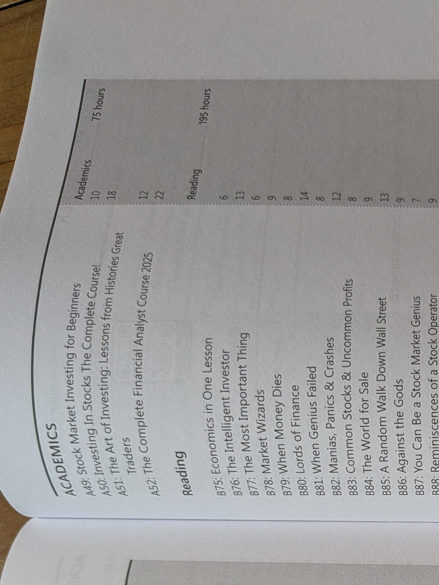

Cycle 1 · 10th-grade Spark · 2028–29
Cycle 1 · 10th-grade Spark — CPR, Stop the Bleed, then a real First Responder or EMT path with documented hours on a ride-along or camp medic shift. Climax: cert card + hours log + after-action write-up.

Medic is Art of Manliness shortlist material. The adventure is real medical stress under supervision — not playing doctor on YouTube.
The call: show up calm, document what you saw, and know when you are out of your depth.
CPR and Stop the Bleed first — climax is a real credential plus documented hours on a ride-along or camp medic shift.
| Window | He does | Links |
|---|---|---|
| Fall | CPR/First Aid · Stop the Bleed | Red Cross |
| Winter | FR/EMT course enrollment | TJC EMS |
| Spring+ | Cert + hours + after-action | Supervised shift |
Every bookable gate, camp, class, and competition in one place. Register early — spring slots fill.
| Resource | Use for | Link |
|---|---|---|
| Red Cross CPR/First Aid | Gate credential | www.redcross.org/take-a-class |
| Stop the Bleed | Bleeding control | www.stopthebleed.org/ |
| TJC EMS Professions | EMT path | tjc.edu/programs/emergency-medical-service-professions/ |
| Texas DSHS EMS education | State programs | www.dshs.texas.gov/dshs-ems-trauma-systems/ems-education-programs |
| OpenStax A&P | Body science | openstax.org/details/books/anatomy-and-physiology-2e |
| Modern States Biology | Optional CLEP | modernstates.org/course/biology/ |